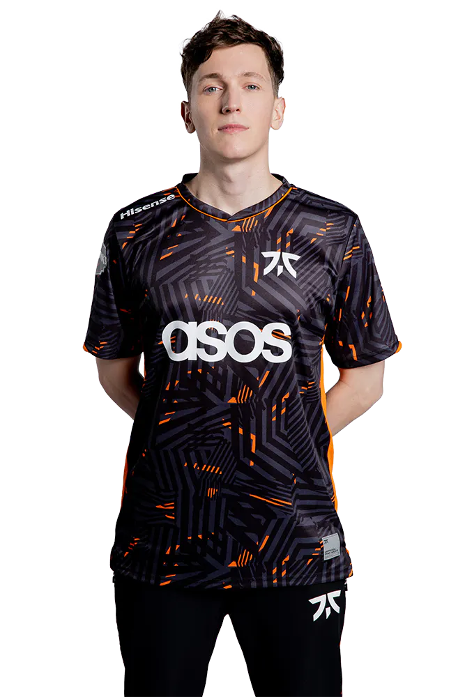
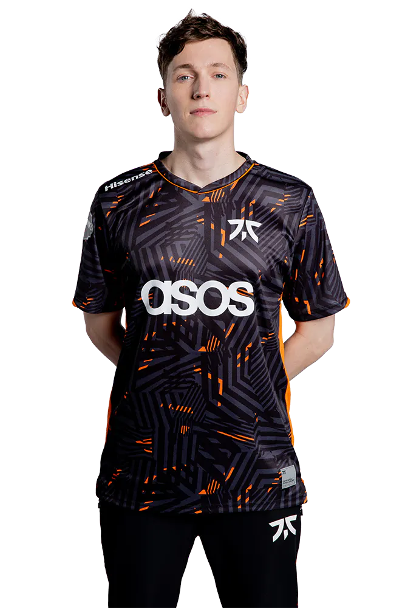

Boaster
¡Campeón indiscutible de la Liga Circuito Tormenta Week 2!
Fecha: 2024-05-02
¡Campeón indiscutible de la Liga Circuito Tormenta Week 2!
Fecha: 2024-05-02
¡Campeón indiscutible de la Liga Circuito Tormenta Week 2!
Fecha: 2024-05-01
¡Campeón indiscutible de la Liga Circuito Tormenta Week 2!
Fecha: 2024-05-03
Forma parte de Circuito Tormenta, la comunidad oficial amateur de League of Legends, Valorant y Wild Rift en España. Síguenos en Twitch y únete a nuestro Discord.